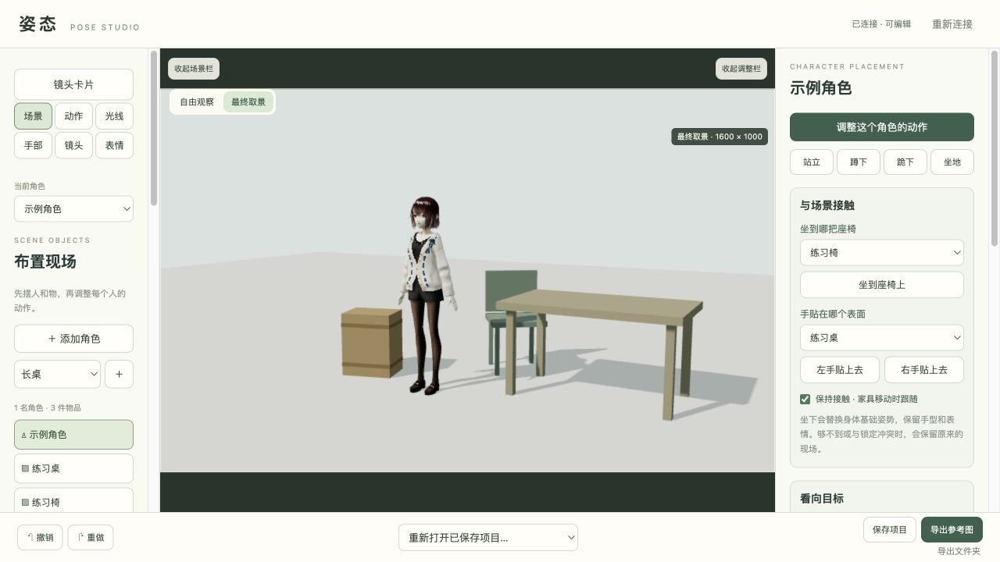

先摆好人物、物品、灯光和镜头，再把参考图交给绘图 AI。
Start-Workbench.cmd。保持黑色启动窗口打开，浏览器会自动打开工作台。浏览器没有自动打开时，将启动窗口显示的网址复制到 Edge 或 Chrome。导出图片在本文件夹的「导出」，参考包在「导出 / AI参考包」。关闭启动窗口即可停止。

集显建议先用一个角色和少量物品。工作台本身不内置聊天或绘图模型。AI 操作方法见「给AI看的说明.md」，详细使用说明见「docs/USAGE.md」。
感谢 ZaberKo/vrm-studio、comfyui-vrm-pose-editor，以及 Three.js、pixiv/three-vrm 和 VRoid Project。具体参考和改编范围、作者署名、版本及许可请看本包的 CREDITS.md、第三方素材说明和 licenses 目录。